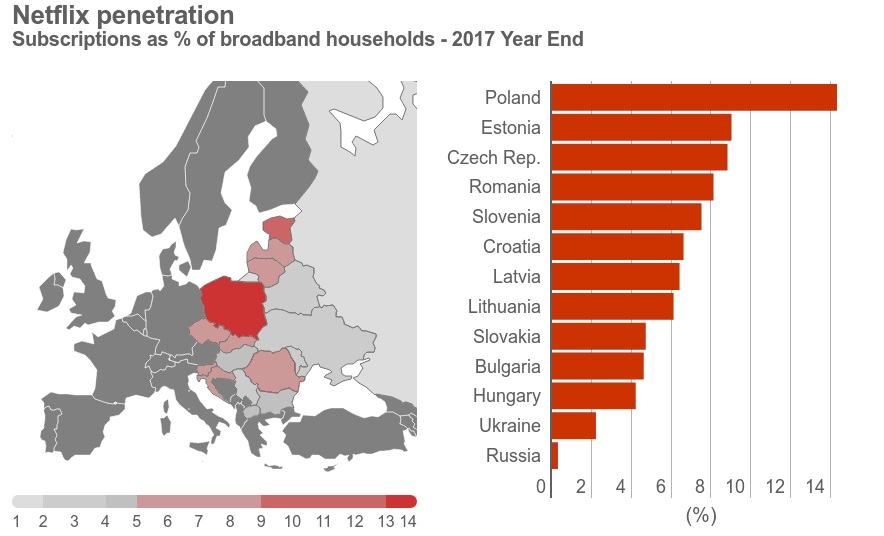
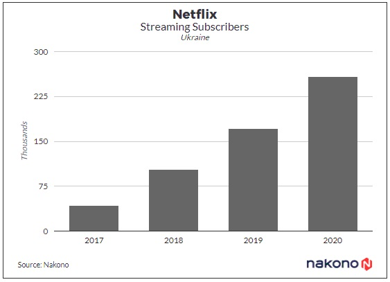

Netflix два года в Украине:
контента на украинском почти нет
29 Января, 2018 16:10
1245
В январе исполнилось два года с тех пор, как в Украине официально заработала американская стриминговая платформа Netflix. По разным данным, за два года пользователями сервиса стали от 40 000 до 100 000 украинцев.
Пользователи
Консалтинговая компания IHS Markit в декабре 2017 года опубликовала отчет, где привела статистику использования платформы в странах Центральной и Восточной Европы. Украина оказалась на предпоследнем месте с показателям в 2% от общего числа домохозяйств с доступом к широкополосному интернету, которые подписаны на Netflix. Как подсчитало издание Liga.net, это число эквивалентно более 100 000 абонентам.
Еще одно исследование подготовила компания Nakono, оно менее оптимистичное: по состоянию на 2017 год количество подписчиков Netflix в Украине составляет почти 43 000 человек. Компания прогнозирует, что к 2020 году этот показатель увеличится до 258 000. На исследование обратило внимание издание Na Chasi.
У исследовательской компании Nakono также есть информация о доходах стриминговой платформы в Украине. Согласно ее данным, в 2017 году этот показатель составил $2,2 млн, а к 2020 году может увеличится до $23,7.
Локализация
Если говорить о локализации, то Netflix продвинулся не сильно далеко. На момент подготовки статьи в украинской озвучке доступно только три проекта, каждый из которых — либо касается Украины, либо был сделан в ней: это документальный фильм о мариупольском пасторе Геннадии Мохненко «Почти святой», сериал студии «Квартал 95» под названием «Слуга народа» (только первый сезон) и документальный фильм о Революции достоинства Winter on Fire. Для сравнения, в русской, польской и турецкой озвучках — десятки фильмов и сериалов, как старых, так и свежих.
Немного лучше обстоят дела с субтитрами на украинском. Около 160 старых и новых фильмов и сериалов имеют субтитры на местном языке. Правда, с сериалами есть проблема — зачастую переведена только его часть, то есть один или два сезона. Например, в сериале Narcos субтитры на украинском есть лишь у первого и второго сезонов, хотя вышло их уже три. Такая же ситуация с сериалом Stranger Things: у второго сезона субтитров на украинском нет. Для сравнения, российские субтитры имеют сотни фильмов и сериалов, хотя порой встречаются те же проблемы, что и в украинской локализации: в третьем сезоне тех же Narcos русских субтитров нет.
У локальных конкурентов Netflix контента на украинском и тем более русском языках значительно больше — счет идет на тысячи и десятки тысяч единиц. В результате, Netflix остается сервисом для тех, кому интересно смотреть на английском языке, с такими же субтитрами, а также получать доступ к эксклюзивам сервиса.
Для сравнения, Netflix в США и во всем мире развивается очень активно. В 2017 году доход сервиса превысил $11,6 млрд, а суммарное количество подписчиков платформы увеличилось и составило 117,5 млн человек.
Напомним, ранее AIN.UA публиковал портрет украинской аудитории в Telegram